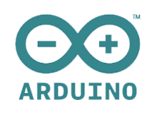
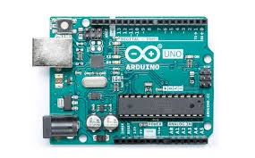
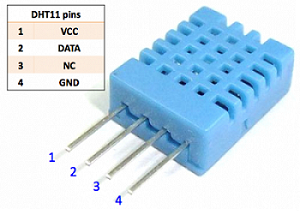

 
Arduino é uma plataforma de prototipagem eletrônica de hardware livre e de placa única,
projetada com um microcontrolador Atmel AVR com suporte de entrada/saída embutido, uma
linguagem de programação padrão, a qual tem origem em Wiring, e é essencialmente C/C++.
O Arduino Uno R3 é uma placa baseada no microcontrolador Tmega328 (datasheet).
Ele tem 14 pinos de entrada/saída digital (dos quais 6 podem ser usados como saídas PWM), 6 entradas analógicas,
um cristal oscilador de 16MHz, uma conexão USB, uma entrada de alimentação uma conexão ICSP e um botão de reset.
O Sensor de Umidade e Temperatura DHT11 é ideal para fazer a leitura de umidade e
temperatura e informar ao microcontrolador como um Arduino. Ele possui saída de sinal digital garantindo alta
confiabilidade e estabilidade a longo prazo. A aquisição de dados deve ser realizada através de um sinal serial
de uma via conforme descrito no datasheet abaixo.